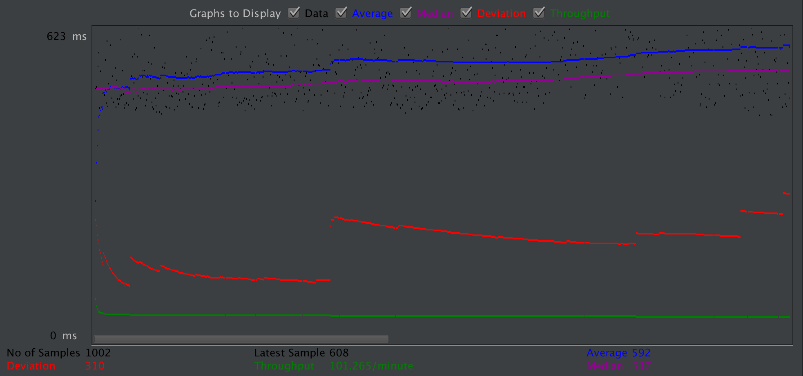
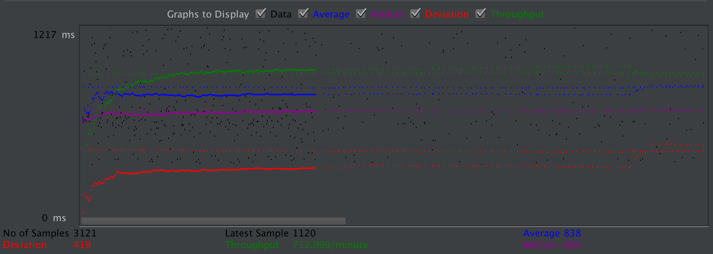
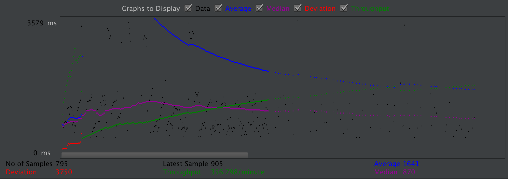
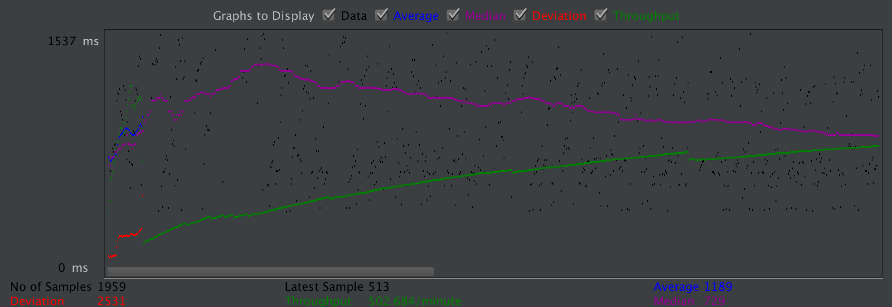
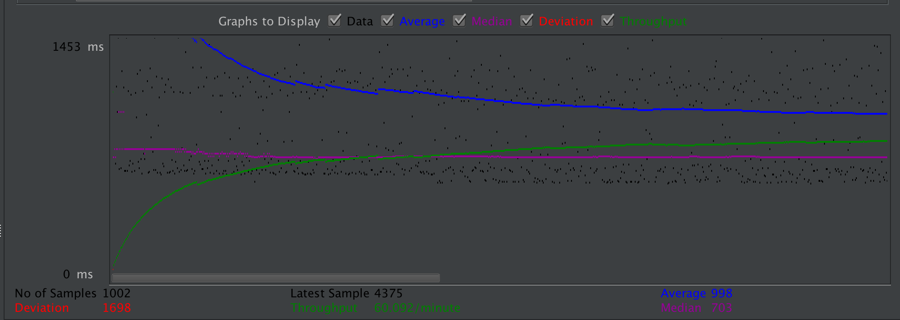
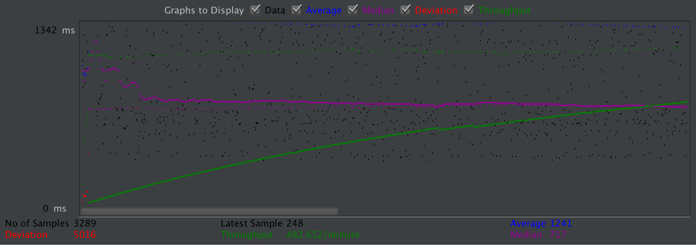
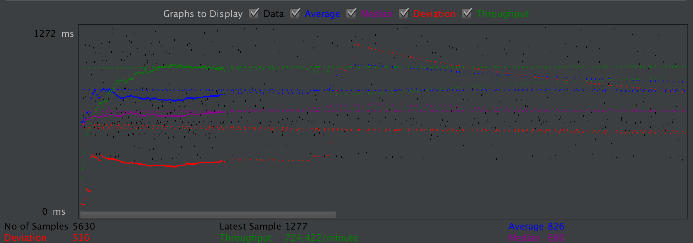
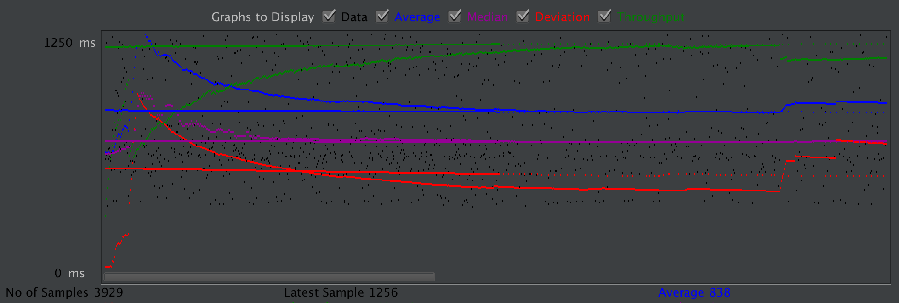

| Single-instance version cases |
Graph Results Screenshot |
Average Query Time(ms) |
Average Search Servlet Time(ms) |
Average JDBC Time(ms) |
Analysis |
| Case 1: HTTP/1 thread |

|
?? |
590.675 |
483.793 |
Since Hibernate uses hql and Jpa, it takes a lot time on JDBC side. |
| Case 2: HTTP/10 threads |

|
?? |
727.055 |
576.781 |
because thread becomes more, query time is longer, database needs time to excute each thread |
| Case 3: HTTPS/10 threads |

|
?? |
?? |
?? |
because https has more security check, and one more redirection each time |
| Case 4: HTTP/10 threads/No prepared statements |

|
?? |
724.673 |
574.016 |
-- |
| Case 5: HTTP/10 threads/No connection pooling |

|
?? |
?? |
?? |
-- |
| Scaled version cases |
Graph Results Screenshot |
Average Query Time(ms) |
Average Search Servlet Time(ms) |
Average JDBC Time(ms) |
Analysis |
| Case 1: HTTP/1 thread |
 |
?? |
499.093 |
417.721 |
This is faster than case 1 because there are two instance handling requests. |
| Case 2: HTTP/10 threads |
 |
?? |
849.318 |
700.166 |
because thread becomes more, query time is longer, database needs time to excute each thread |
| Case 3: HTTP/10 threads/No prepared statements |
 |
?? |
880.320 |
700.741 |
Without prepared statements, the query has to construct each time, thus query time is similar but TS is
bigger
|
| Case 4: HTTP/10 threads/No connection pooling |
 |
?? |
932.023 |
7502.052 |
each query a new connection is made, thus it take more time |